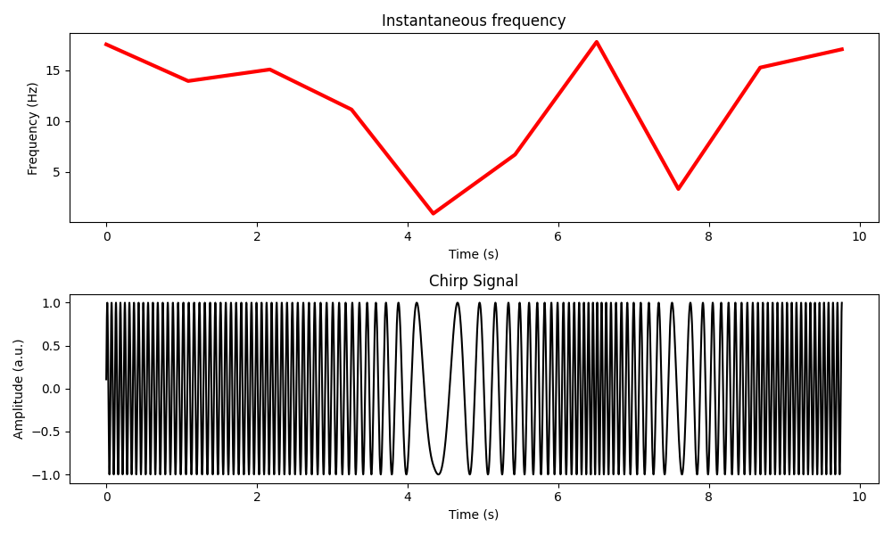

time_series_noise_simulation package
Submodules
time_series_noise_simulation.chirps module
- generate_chirp_signal(pnts: int, srate: int, chirp_type: str = 'bipolar', k: int = 10) Tuple[ndarray, ndarray, ndarray][source]
Generate a chirp signal.
- Parameters:
pnts (int) – Number of data points.
srate (int) – Sampling rate.
chirp_type (str, optional) – Type of chirp signal (‘bipolar’ or ‘multipolar’). Default is ‘bipolar’.
k (int, optional) – Number of poles for frequencies in case of ‘multipolar’ chirp. Default is 10.
- Returns:
Time vector, instantaneous frequency, and generated chirp signal.
- Return type:
Tuple[np.ndarray, np.ndarray, np.ndarray]
time_series_noise_simulation.sin_gaus_euler_function module
- plot_each_sine_wave(frex: List[float], amplit: List[float], phases: List[float]) None[source]
Plots each individual sine wave.
- Parameters:
frex (list[float]) – List of frequencies for each sine wave.
amplit (list[float]) – List of amplitudes for each sine wave.
phases (list[float]) – List of phases for each sine wave in radians.
- Returns:
None
- plot_eulers_formula(M: float, k: float) None[source]
Plots Euler’s formula.
\[M e^{i k } = M(\cos{k} + i\sin{k})\]- with:
M : distance from the origin
k : angle in respect to the positive real axis
- Parameters:
M (float) – Magnitude of the complex number.
k (float) – Phase angle of the complex number in radians.
- Returns:
None
- plot_gaussian(ptime: float, ampl: float, fwhm: float) None[source]
Plots a Gaussian curve.
Gaus formula:
\[a e^{\frac{- (t-m)^2}{2 s^2}}\]- with:
m : time point at peak
t : time
s : width
\[a e^{\frac{-4 \ln{2} t^2}{fwhm^2}}\]- with:
fwhm : full width at half maximum (s)
t : time
fwhm is a more more easy tunable and understainable parameter to tun guassian function as s
- Parameters:
ptime (float) – Peak time of the Gaussian curve.
ampl (float) – Amplitude of the Gaussian curve.
fwhm (float) – Full-width at half-maximum of the Gaussian curve.
- Returns:
None
- plot_sine_wave(freq: float, srate: int, ampl: float, phas: float) None[source]
Plots a sine wave.
Sin wave formula:
\[a\sin({2 \pi f t + \theta})\]- with:
a : amplitude
f : frequency
t : time
theta : phase shift
- Parameters:
freq (float) – Frequency of the sine wave in Hz.
srate (int) – Sampling rate in Hz.
ampl (float) – Amplitude of the sine wave.
phas (float) – Phase of the sine wave in radians.
- Returns:
None
- plot_sum_of_sine_waves(frex: List[float], amplit: List[float], phases: List[float]) None[source]
Plots the sum of multiple sine waves.
- Parameters:
frex (list[float]) – List of frequencies for each sine wave.
amplit (list[float]) – List of amplitudes for each sine wave.
phases (list[float]) – List of phases for each sine wave in radians.
- Returns:
None